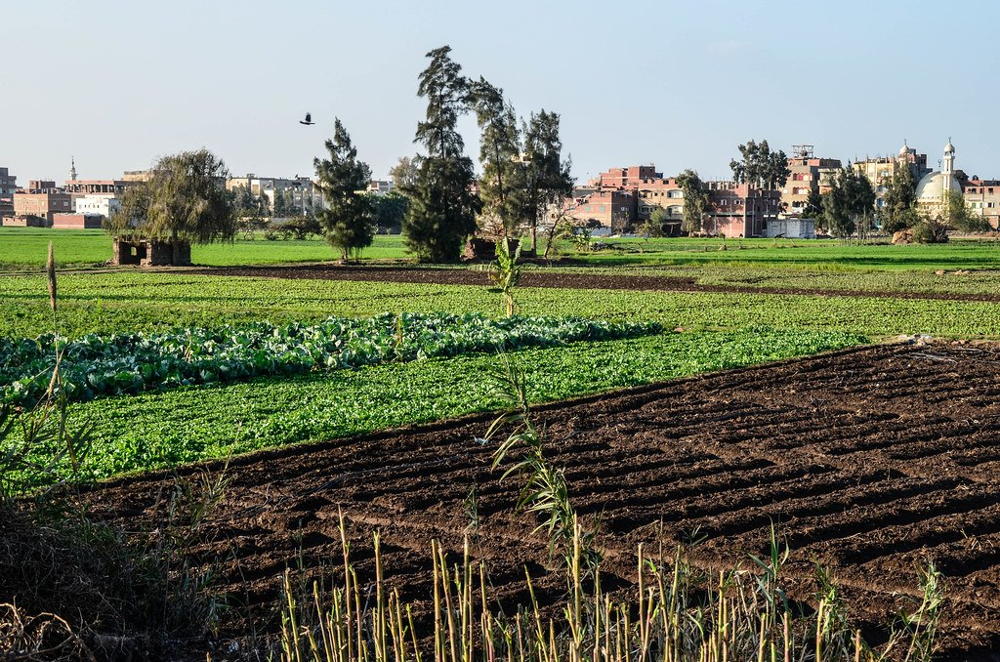
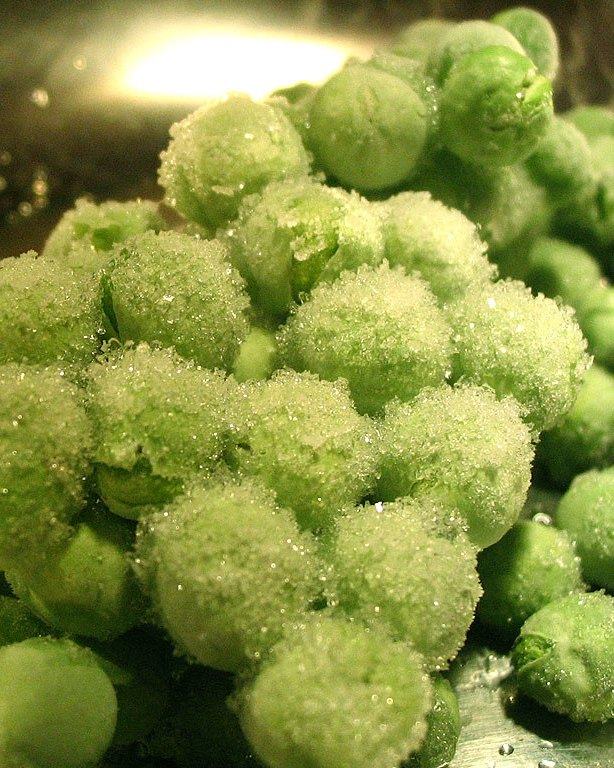
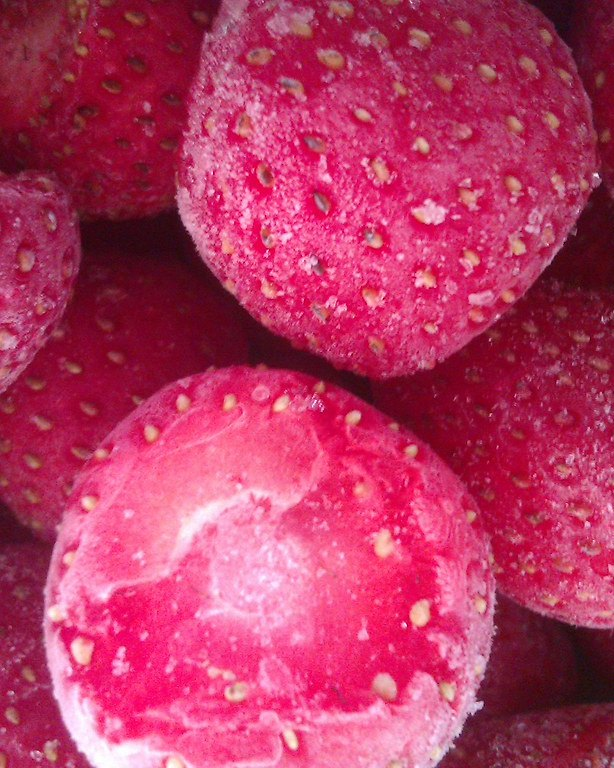
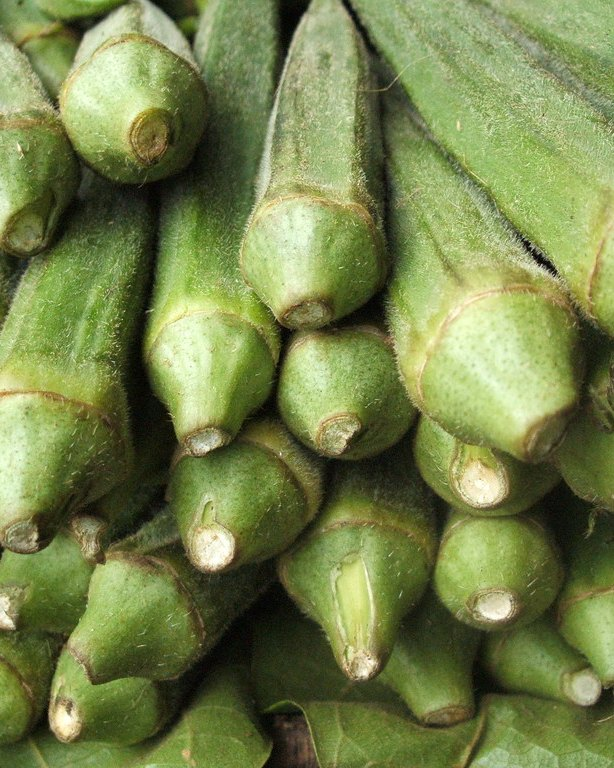
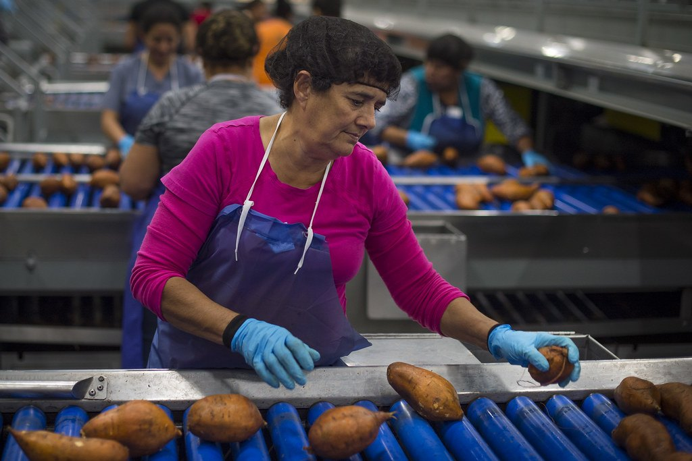
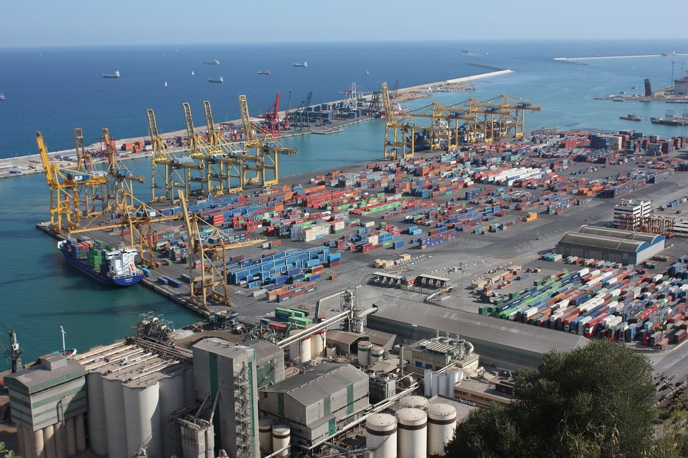

From field to freezer in under four hours.
Our farms sit close to the plant, so produce is cooled, cleaned and frozen the same morning it is picked.
Peas, beans, okra, strawberries and mango, grown along the Nile and harvested at their best.
Straight from the field into −40°C air, before the flavour has time to fade.
Individually quick frozen. Nothing clumps, so you pour exactly what you need and keep the rest frozen.
Our farms sit close to the plant, so produce is cooled, cleaned and frozen the same morning it is picked.
Cold air keeps each pea, bean and berry moving while it freezes, so it never sticks to the next one.
Fast freezing makes small ice crystals. Cell walls stay intact, so texture and colour survive thawing.
Every line runs through foreign-body detection after freezing and again after packing.
Private label in retail, food service and industrial sizes, printed to your artwork and language.
Full and mixed container loads, with temperature logs from our cold store to your port.

Our contract farms grow peas, beans, okra and strawberries in Nile soil, a short drive from the freezer.
Choose a crop to see its cuts and sizes. The full range is in our catalogue.
Colour, shape and bite stay the way they left the field.



Eight steps, one temperature line. Scroll through and watch it fall.

Contract farms grow to our seed and spray plans. Agronomists pick the harvest day by sugar and tenderness, not the calendar.
Every truck is sampled and logged with its farm and plot, so each bag can be traced back to the field.
Optical sorters remove stones, stems and off-colour pieces. Produce is graded by size and washed in chilled water.
A short dip in hot water stops the enzymes that dull colour and flavour. Fruits skip this step.
Ice-water flumes bring the temperature down in seconds, so the vegetables stop cooking.
A fluidised bed of cold air lifts each piece as it freezes. Minutes later it is frozen to the core and free-flowing.
Metal detection, X-ray and lab checks on every lot, then packed into retail bags, food-service packs or cartons.
Kept in our cold store, then loaded into reefer containers at −18°C with a temperature log for the whole voyage.
Nothing added. No preservatives. Just the crop, frozen at the moment it was best.
Private label from a 400 g retail bag to a 1-tonne tote.
Printed bags, stand-up pouches and cartons, ready for supermarket shelves.
Clear or printed bags in master cartons for restaurants, hotels and caterers.
Lined cartons for food manufacturers and repackers.
Totes and octabins for processors who need volume.
Certificates and audit reports are available on request for every shipment.
Required by most UK and EU retailers.
Food safety management, recognised by GFSI.
Good farming practice on our contract farms.
Hazard controls at every critical point on the line.
For buyers in the Gulf, Asia and Muslim markets.
Certified for kosher retail and food service.

Countries we ship to
Tonnes frozen each year
Pallet spaces in our cold store
From harvest to freezing
Retail private label and food service across the EU and UK.
Halal-certified retail and catering supply.
Okra, molokhia and ethnic vegetables for specialty retail.
Bulk vegetables and fruit for processors.
Individually quick frozen. Each piece is frozen separately in a stream of very cold air, so it stays loose in the bag. You can pour out exactly what you need and reseal the rest.
One 40 ft reefer container, about 24–26 tonnes. You can mix several products in one container.
Yes. We print to your artwork in retail, food-service and industrial sizes. Send us your specs and we will quote packaging and lead time together.
24 months from production when stored at −18°C or colder.
Yes. We ship frozen samples by courier along with spec sheets and the latest lab results.
Alexandria and Damietta, with Sokhna for Gulf and Asian routes. FOB, CFR and CIF terms are available.
Our export team replies within one working day with prices, specs and availability.